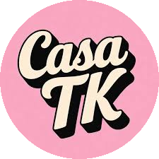
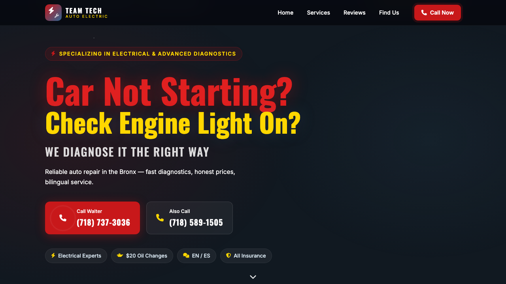
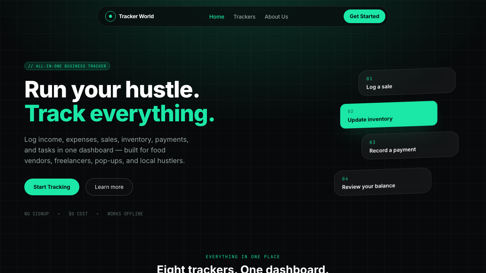

Buffet Lucia's Fiesta Mexicana
BusinessFull business website for a Mexican catering restaurant — featuring the full menu, catering packages, online ordering information, business hours, and contact details. Deployed on a custom domain with a modern, mobile-first design that reflects the brand's identity.

BLFM — Original Site
BusinessThe original restaurant website for Buffet Lucia's Fiesta Mexicana. Features a full digital menu layout, catering information, and brand presentation — the foundation before the custom domain migration.


PeopleShores DC
CorporateProfessional corporate landing page for PeopleShores DC, a workforce development organization. Built during my Full Stack Developer role at PeopleShores, featuring program highlights, service offerings, and a clean professional layout.



Berlin Group Family Daycare
BusinessLicensed family daycare website for Berlin Group Family Daycare in the Bronx, NY. Bilingual (English/Spanish) site covering programs for infants through school-age children, daily schedules, credentials, and enrollment info.

Lotus Family Group Daycare
BusinessLicensed family group daycare website for LOTUS Family Group Daycare in the Bronx, NY. Showcases programs for infants through age 13, daily schedules, safety and educational features, and owner credentials.

Team Tech Auto Electric
BusinessBilingual (English/Spanish) single-page business website for Team Tech Auto Electric, an auto repair and electrical shop in the Bronx, NY. Features an animated particle hero background, an auto-advancing testimonial slider, and a persistent language preference via localStorage.

Tracker World
Capstone 2025All-in-one business tracker for small-scale entrepreneurs — food vendors, freelancers, pop-ups, and local hustlers. Eight dedicated trackers (income, expenses, sales, inventory, payments, tasks, clients, services) in one dashboard, running entirely in-browser with local storage — no signup, no cost, works offline.

Buffet Delivery Tracker
Business ToolOrder and delivery management tool built for Buffet Lucia's Fiesta Mexicana. Tracks catering deliveries, manages customer orders, and streamlines logistics for the business operations team.


V-Tracker — Vehicle Maintenance System
Full StackFull stack vehicle maintenance tracking application engineered from the ground up. React.js + Tailwind CSS frontend, Java Spring Boot REST API backend, MySQL database with Google Sheets API integration for data reporting and visualization. Prompt engineering was applied throughout development — using ChatGPT and Gemini to convert product specs into technical instructions and debug complex logic.

RAG Chatbot
AI ProjectAI-powered chatbot using Retrieval-Augmented Generation (RAG). Allows users to query a knowledge base with natural language and receive context-aware responses grounded in source documents rather than hallucinated answers.
Have a project in mind?
I'm available for freelance work, contract roles, and full-time opportunities.